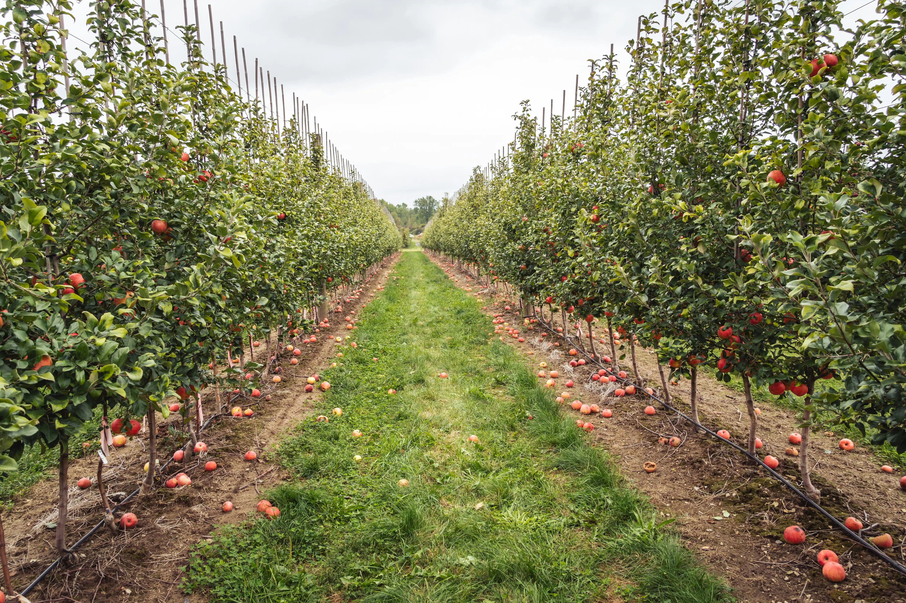

Frutas Frescas
17 Sep 2025
HuertoHogar
Nuestra selección de frutas frescas ofrece una experiencia directa del campo a tu hogar. Estas frutas se cultivan y cosechan en el punto óptimo de madurez para asegurar su sabor y frescura. Disfruta de una variedad de frutas de temporada que aportan vitaminas y nutrientes esenciales a tu dieta diaria.
Perfectas para consumir solas, en ensaladas o como ingrediente principal en postres y smoothies. Cada fruta seleccionada garantiza el máximo sabor y valor nutricional para toda la familia.
1,234 lecturas
Ver Productos